主帖标题: 3月1-5日大盘涨跌卦
占事：3月1-5日大盘涨跌？
公历时间：2010年2月26日16时0分 星期五
干支：庚寅年 戊寅月 丁未日 戊申时 (旬空：寅卯)
神煞：驿马—巳 桃花—子 日禄—午 贵人—酉，亥
震宫：雷水解
六神 伏 神 【本 卦】
青龙 ▅▅ ▅▅ 妻财庚戌土
玄武 ▅▅ ▅▅ 官鬼庚申金 应
白虎 ▅▅▅▅▅ 子孙庚午火
螣蛇 ▅▅ ▅▅ 子孙戊午火
勾陈 ▅▅▅▅▅ 妻财戊辰土 世
朱雀 父母庚子水 ▅▅ ▅▅ 兄弟戊寅木
此卦六爻安静，应临玄鬼，虽有两土相生，然临年月绝地，日建又走衰病死墓绝，幸原神尚可扶，断之不会有大的涨跌，会有小幅下挫，五天情况应为：涨跌跌涨跌。供参考！
主帖标题: 明天妖股怎样呀麦站。。。
出生：没填 年 性别：男 占事：600610中毅达明天涨跌
排卦：元亨利贞网六爻在线排盘系统 http://www.china95.net
公历起卦时间：2016年2月25日18时41分 (电脑自动)
干支：丙申年 庚寅月 丁丑日 己酉时 （日空：申酉）
神煞：驿马－亥 桃花－午 日禄－午 贵人－酉，亥
震宫：雷水解
六神 伏神 本 卦
青龙 妻财庚戌土 ▅▅ ▅▅
玄武 官鬼庚申金 ▅▅ ▅▅ 应
白虎 子孙庚午火 ▅▅▅▅▅
腾蛇 子孙戊午火 ▅▅ ▅▅
勾陈 妻财戊辰土 ▅▅▅▅▅ 世
朱雀 父母庚子水 兄弟戊寅木 ▅▅ ▅▅
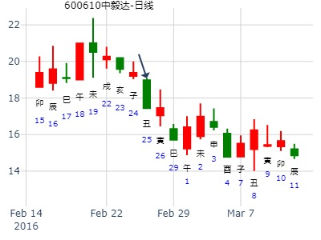
主题：咸阳偏转[000697]下周走势？
丁亥 癸卯 庚戌 癸未 (寅卯空)
丁亥年正月廿八(2007/03/17 13:40:35)
雷水解
腾蛇 妻财戌土 ∥
勾陈 官鬼申金 ∥ 应
朱雀 子孙午火 ／
青龙 子孙午火 ∥
玄武 妻财辰土 ／ 世父母子水：
白虎 兄弟寅木 ∥
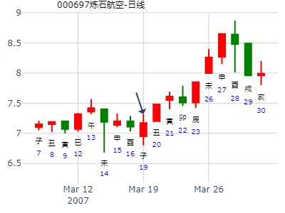
解静卦,上证-下周上证吉凶？ by 王小灰
时间: 2023-03-12
干支: 癸卯年乙卯月己巳日 (旬空: 戌亥 )
解静卦
勾陈 ▅▅ ▅▅ 妻财戌土
朱雀 ▅▅ ▅▅ 官鬼申金 应
青龙 ▅▅▅▅▅ 子孙午火
玄武 ▅▅ ▅▅ 子孙午火
白虎 ▅▅▅▅▅ 妻财辰土 世
腾蛇 ▅▅ ▅▅ 兄弟寅木
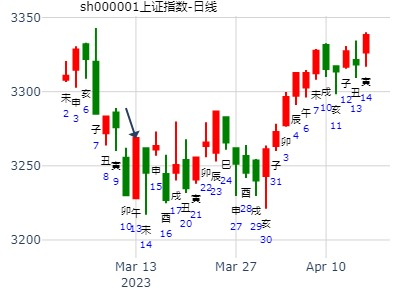
时间: 1996-04-08
干支: 丙子年壬辰月乙亥日 (旬空: 申酉 )
解静卦
玄武 ▅▅ ▅▅ 妻财戌土
白虎 ▅▅ ▅▅ 官鬼申金 应
腾蛇 ▅▅▅▅▅ 子孙午火
勾陈 ▅▅ ▅▅ 子孙午火
朱雀 ▅▅▅▅▅ 妻财辰土 世
青龙 父母子水▅▅ ▅▅ 兄弟寅木
以大盘代替，供参考。
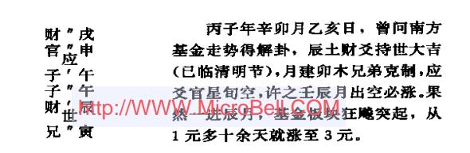
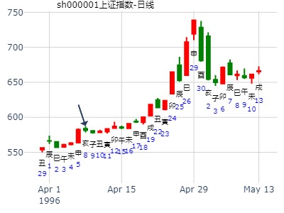
主帖标题: [原创]预测24日上证走势
以下是引用hswqy在2007-4-21 21:23:00的发言：
出生年：1963年 性别：男 占事：24日上证走势
起卦方式：手动摇卦 www.iqing.net 线上排盘系统
公历时间：2007年4月21日21时8分 星期六
干支：丁亥年 甲辰月 乙酉日 丁亥时 (旬空：午未)
神煞：驿马—亥 桃花—午 日禄—卯 贵人—子，申
震宫：雷水解
六神 伏 神 【本 卦】
玄武 ▅▅ ▅▅ 妻财庚戌土
白虎 ▅▅ ▅▅ 官鬼庚申金 应
螣蛇 ▅▅▅▅▅ 子孙庚午火
勾陈 ▅▅ ▅▅ 子孙戊午火
朱雀 ▅▅▅▅▅ 妻财戊辰土 世
青龙 父母庚子水 ▅▅ ▅▅ 兄弟戊寅木
财爻持世,财官相生,易得财!看涨诸位易友看看如何!财持世临月强旺 / 依然强劲双原子休囚而空 / 上升空间不大兄在世财之下而休囚,得仇伏生 / 有一波下跌势头巳，午时 / 财子得旺，走势向上未时 ／ 应官强旺，世财泄旺官，有回落之势
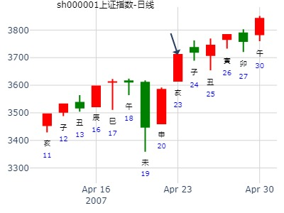
占事：水皮说股指今年再次见3300点，是吗?
公历起卦时间：2013年4月19日14时43分 (在线摇卦)
干支：癸巳年 丙辰月 乙卯日 癸未时 （日空：子丑）
神煞：驿马－巳 桃花－子 日禄－卯 贵人－子，申
震宫：雷水解 震宫：雷水解
六神 伏神 本 卦 变 卦
玄武 妻财庚戌土 ▅▅ ▅▅ 妻财庚戌土 ▅▅ ▅▅
白虎 官鬼庚申金 ▅▅ ▅▅ 应 官鬼庚申金 ▅▅ ▅▅ 应
腾蛇 子孙庚午火 ▅▅▅▅▅ 子孙庚午火 ▅▅▅▅▅
勾陈 子孙戊午火 ▅▅ ▅▅ 子孙戊午火 ▅▅ ▅▅
朱雀 妻财戊辰土 ▅▅▅▅▅ 世 妻财戊辰土 ▅▅▅▅▅ 世
青龙 父母庚子水 兄弟戊寅木 ▅▅ ▅▅ 兄弟戊寅木 ▅▅ ▅▅
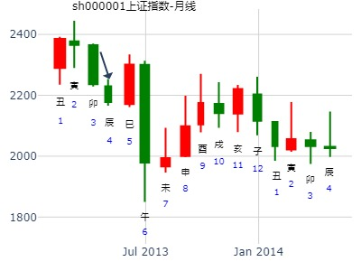
姓名： 出生年:1981 性别：男
占事：000511 -43
起卦方式：手动摇卦 易经股市论坛 在线排盘系统
公历时间：2014年4月3日8时26分
干 支：甲午年 丁卯月 甲辰日 戊辰时 旬 空：辰巳 戌亥 (寅卯) 戌亥
震宫：雷水解
六神 伏 神 【本 卦】
玄武 ▄▄ ▄▄ 妻财庚戌土
白虎 ▄▄ ▄▄ 官鬼庚申金 应
螣蛇 ▄▄▄▄▄ 子孙庚午火
勾陈 ▄▄ ▄▄ 子孙戊午火
朱雀 ▄▄▄▄▄ 妻财戊辰土 世
青龙 父母庚子水 ▄▄ ▄▄ 兄弟戊寅木
分析： 1.财爻持世，求财易得。 且财值日。
2.兄弟寅卯又空。3.解卦，雷出地奋，主动脱脸。
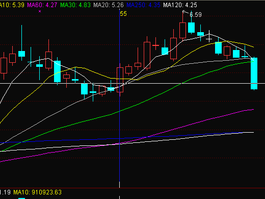
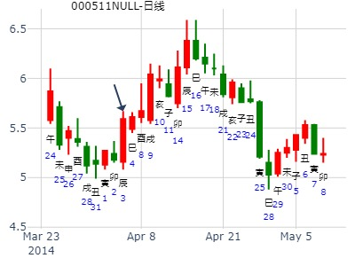
上证4.30收盘走势
出生：2021 年 性别：男 占事：没填
排卦：元亨利贞网六爻在线排盘系统 https://www.china95.net
公历起卦时间：2021年4月30日7时48分 (电脑自动)
干支：辛丑年 壬辰月 戊申日 丙辰时 （日空：寅卯）
神煞：驿马－寅 桃花－酉 日禄－巳 贵人－丑，未
震宫：雷水解 震宫：雷水解
六神 伏神 本 卦 变 卦
朱雀 妻财庚戌土 ▅▅ ▅▅ 妻财庚戌土 ▅▅ ▅▅
青龙 官鬼庚申金 ▅▅ ▅▅ 应 官鬼庚申金 ▅▅ ▅▅ 应
玄武 子孙庚午火 ▅▅▅▅▅ 子孙庚午火 ▅▅▅▅▅
白虎 子孙戊午火 ▅▅ ▅▅ 子孙戊午火 ▅▅ ▅▅
螣蛇 妻财戊辰土 ▅▅▅▅▅ 世 妻财戊辰土 ▅▅▅▅▅ 世
勾陈 父母庚子水 兄弟戊寅木 ▅▅ ▅▅ 兄弟戊寅木 ▅▅ ▅▅

主题：上海股市大盘下周涨跌走势？ 丁亥
乙巳庚子庚辰 (辰巳空) 丁亥年三月廿十(2007/05/06 07:50:23)
时间: 2007-05-06
干支: 丁亥年乙巳月庚子日 (旬空: 辰巳 )
解静卦
腾蛇 ▅▅ ▅▅ 妻财戌土
勾陈 ▅▅ ▅▅ 官鬼申金 应
朱雀 ▅▅▅▅▅ 子孙午火
青龙 ▅▅ ▅▅ 子孙午火
玄武 ▅▅▅▅▅ 妻财辰土 世
白虎 父母子水▅▅ ▅▅ 兄弟寅木
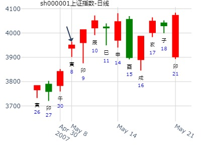
欣灵电气在巳月-金手工
时间: 2023-05-11 15时11分
干支: 癸卯年丁巳月己巳日 (旬空: 戌亥 )
解静卦
勾陈 ▅▅ ▅▅ 妻财戌土
朱雀 ▅▅ ▅▅ 官鬼申金 应
青龙 ▅▅▅▅▅ 子孙午火
玄武 ▅▅ ▅▅ 子孙午火
白虎 ▅▅▅▅▅ 妻财辰土 世
腾蛇 父母子水▅▅ ▅▅ 兄弟寅木
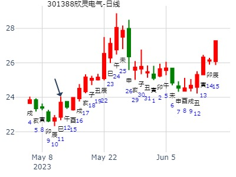
占事：南京化纤午月行情？ 中国实话
2015年6月6日14时49分 乙未年 壬午月 癸丑日 己未时 (寅卯)
震宫：雷水解
六神 伏 神 【本 卦】
白虎 ▄▄ ▄▄ 妻财庚戌土
螣蛇 ▄▄ ▄▄ 官鬼庚申金 应
勾陈 ▄▄▄▄▄ 子孙庚午火
朱雀 ▄▄ ▄▄ 子孙戊午火
青龙 ▄▄▄▄▄ 妻财戊辰土 世
玄武 父母庚子水 ▄▄ ▄▄ 兄弟戊寅木
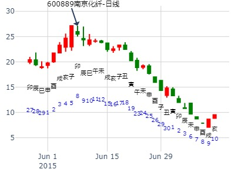
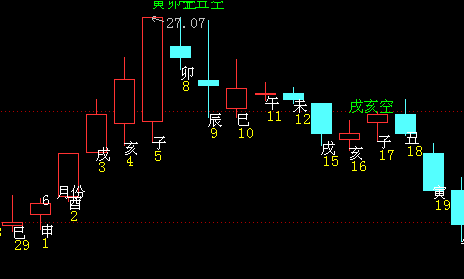
主帖标题: 7月28日-8月1日大盘涨跌卦
以下是引用金眼牛在2008-7-25 20:26:00的发言：
占事：7月28日-8月1日大盘涨跌?
公历时间：2008年7月25日15时12分 星期五
干支：戊子年 己未月 丙寅日 丙申时 (旬空：戌亥)
神煞：驿马—申 桃花—卯 日禄—巳 贵人—酉，亥
震宫：雷水解
六神 伏 神 【本 卦】
青龙 ▅▅ ▅▅ 妻财庚戌土
玄武 ▅▅ ▅▅ 官鬼庚申金 应
白虎 ▅▅▅▅▅ 子孙庚午火
螣蛇 ▅▅ ▅▅ 子孙戊午火
勾陈 ▅▅▅▅▅ 妻财戊辰土 世
朱雀 父母庚子水 ▅▅ ▅▅ 兄弟戊寅木
周收长阳线。周一 高开单边上扬普涨行情，收长阳线；周二 温和上涨；周三上涨回落，收小阳线；周四震荡整理行情，有版块效应明显；五温和整理行情。

2019年7月大盘。雷水解静卦。.md
时间: 2019-07-06 12：42
干支: 己亥年庚午月甲辰日庚午时 (旬空: 寅卯 )
解静卦
玄武 ▅▅ ▅▅ 妻财戌土
白虎 ▅▅ ▅▅ 官鬼申金 应
腾蛇 ▅▅▅▅▅ 子孙午火
勾陈 ▅▅ ▅▅ 子孙午火
朱雀 ▅▅▅▅▅ 妻财辰土 世
青龙 父母子水▅▅ ▅▅ 兄弟寅木
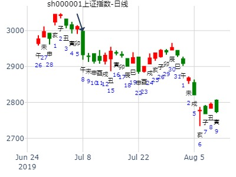
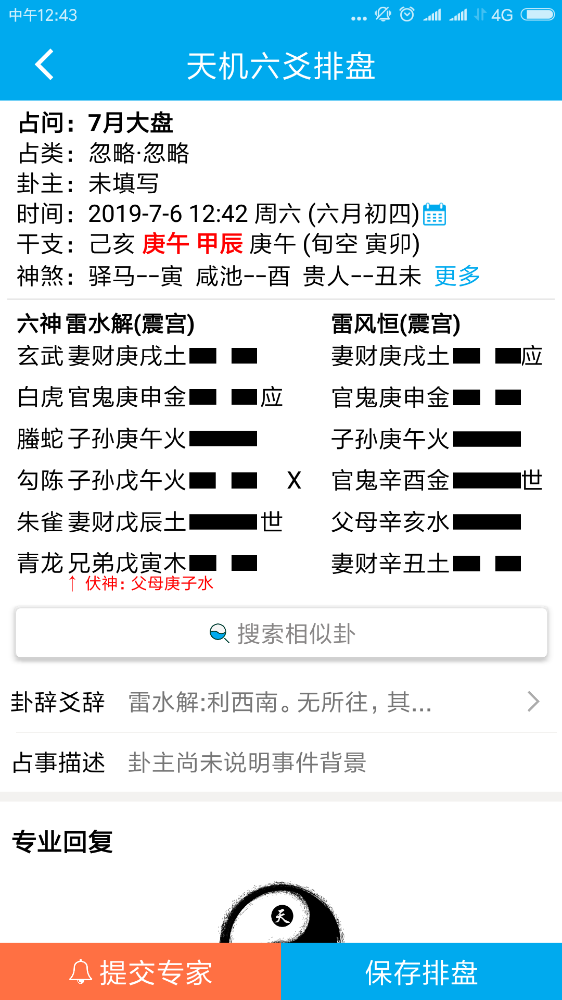
主帖标题: 00259 明天
出生：2020 年 性别：男 占事：没填 00228 0703
公历起卦时间：2020年7月2日22时22分 (在线摇卦)
干支：庚子年 壬午月 丙午日 己亥时 （日空：寅卯）
神煞：驿马－申 桃花－卯 日禄－巳 贵人－酉，亥
震宫：雷水解 震宫：雷水解
六神 伏神 本 卦 变 卦
青龙 妻财庚戌土 ▅▅ ▅▅ 妻财庚戌土 ▅▅ ▅▅
玄武 官鬼庚申金 ▅▅ ▅▅ 应 官鬼庚申金 ▅▅ ▅▅ 应
白虎 子孙庚午火 ▅▅▅▅▅ 子孙庚午火 ▅▅▅▅▅
螣蛇 子孙戊午火 ▅▅ ▅▅ 子孙戊午火 ▅▅ ▅▅
勾陈 妻财戊辰土 ▅▅▅▅▅ 世 妻财戊辰土 ▅▅▅▅▅ 世
朱雀 父母庚子水 兄弟戊寅木 ▅▅ ▅▅ 兄弟戊寅木 ▅▅ ▅▅
注：贴主清静道人，习惯性股票名写一半。此贴不配图。
占事：中国铝业未来二周-风生水起-2021-08-14
时间: 2021-08-14 7时19分
干支: 辛丑年丙申月甲午日 (旬空: 辰巳 )
解静卦
玄武 ▅▅ ▅▅ 妻财戌土
白虎 ▅▅ ▅▅ 官鬼申金 应
腾蛇 ▅▅▅▅▅ 子孙午火
勾陈 ▅▅ ▅▅ 子孙午火
朱雀 ▅▅▅▅▅ 妻财辰土 世
青龙 ▅▅ ▅▅ 兄弟寅木
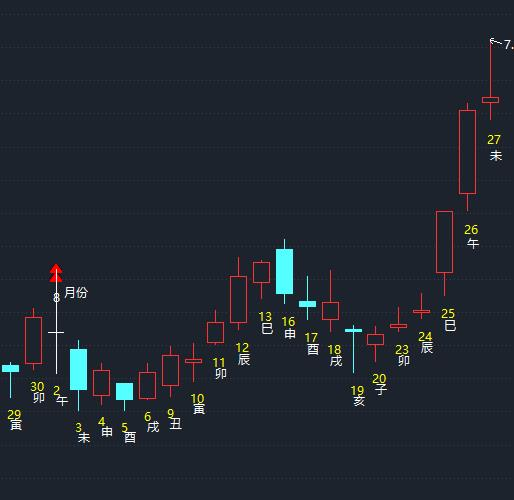
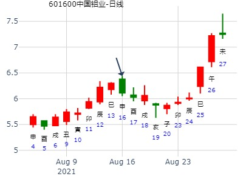
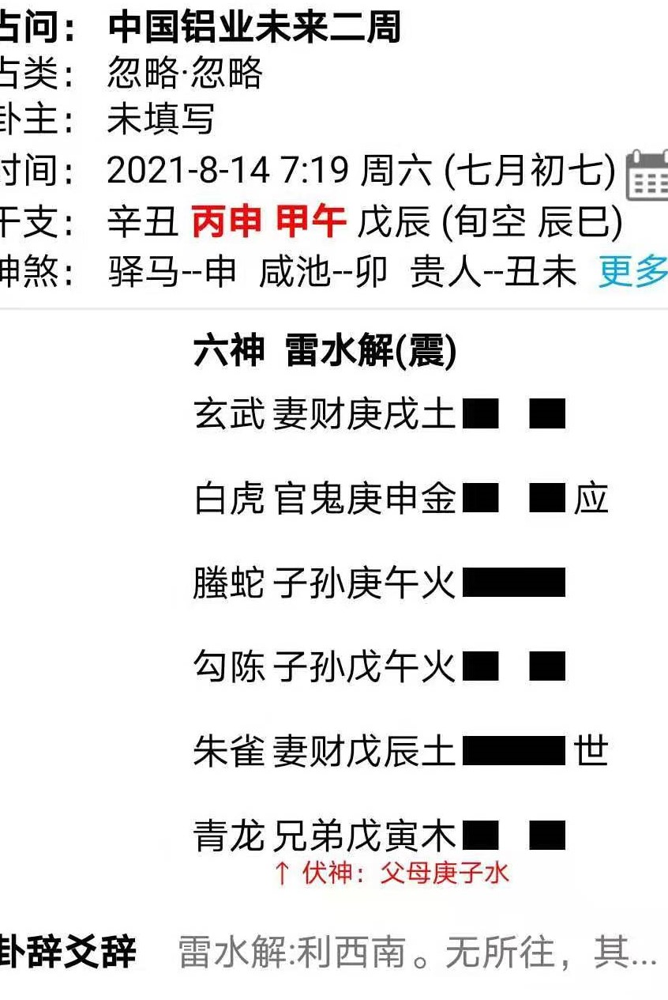
主帖标题: 总结下21日的卦例
起卦公历：2009年9月18日13时40分(北京时间)。
起卦农历：己丑年 七月 三十日 未时。
干支： 己丑年 癸酉月 丙寅日 乙未时 (卦身：丑)
主变卦 雷水解(震宫) [空亡:戌、亥]
青龙 ━ ━ 妻财戌土
玄武 ━ ━ 官鬼申金 应
白虎 ━━━ 子孙午火
螣蛇 ━ ━ 子孙午火
勾陈 ━━━ 妻财辰土 世
朱雀 父母子水 ━ ━ 兄弟寅木

占事：11月大盘-qaqahappy
时间: 2005-10-28 21：36
干支: 乙酉年丙戌月乙酉日丁亥时 (旬空: 午未 )
解静卦
玄武 ▅▅ ▅▅ 妻财戌土
白虎 ▅▅ ▅▅ 官鬼申金 应
腾蛇 ▅▅▅▅▅ 子孙午火
勾陈 ▅▅ ▅▅ 子孙午火
朱雀 ▅▅▅▅▅ 妻财辰土 世
青龙 ▅▅ ▅▅ 兄弟寅木
亥月子孙弱又空，涨不动。到了子月反而涨。莫非子冲午实。
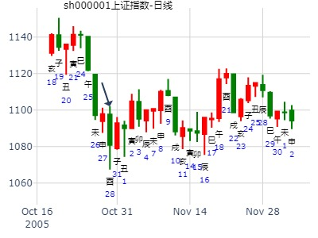
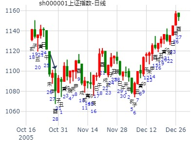
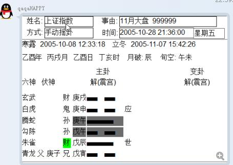
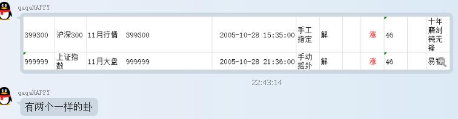
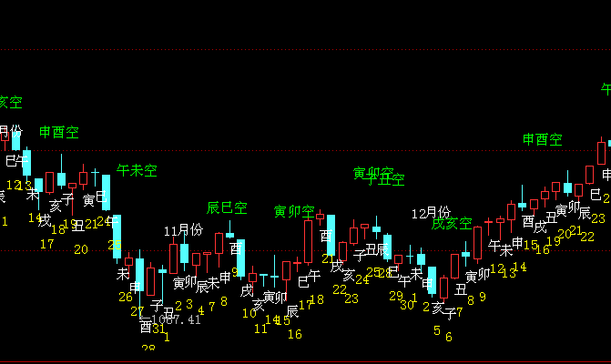
占事：近两周大盘走势 招财进宝
公历起卦时间：2014年10月14日20时36分 (在线摇卦)
干支：甲午年 甲戌月 戊午日 壬戌时 （日空：子丑）
震宫：雷水解 震宫：雷水解
六神 伏神 本 卦 变 卦
朱雀 妻财庚戌土 ▅▅ ▅▅ 妻财庚戌土 ▅▅ ▅▅
青龙 官鬼庚申金 ▅▅ ▅▅ 应 官鬼庚申金 ▅▅ ▅▅ 应
玄武 子孙庚午火 ▅▅▅▅▅ 子孙庚午火 ▅▅▅▅▅
白虎 子孙戊午火 ▅▅ ▅▅ 子孙戊午火 ▅▅ ▅▅
腾蛇 妻财戊辰土 ▅▅▅▅▅ 世 妻财戊辰土 ▅▅▅▅▅ 世
勾陈 父母庚子水 兄弟戊寅木 ▅▅ ▅▅ 兄弟戊寅木 ▅▅ ▅▅
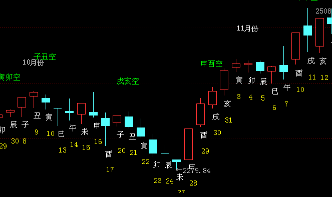
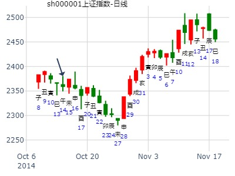
[周卦] 上证大盘本周10.8-9行情
起卦方式：易情股恋 手动摇卦 易经股市论坛 www.yijingstock.com 在线排盘系统
公历时间：2015年10月7日7时18分
干 支：乙未年 乙酉月 丙辰日 壬辰时
旬 空：辰巳 午未 (子丑) 午未
震宫：雷水解
六神 伏 神 【本 卦】
青龙 ▄▄ ▄▄ 妻财庚戌土
玄武 ▄▄ ▄▄ 官鬼庚申金 应
白虎 ▄▄▄▄▄ 子孙庚午火
螣蛇 ▄▄ ▄▄ 子孙戊午火
勾陈 ▄▄▄▄▄ 妻财戊辰土 世
朱雀 父母庚子水 ▄▄ ▄▄ 兄弟戊寅木
子孙午火，日辰巳火、午火，行情应该是火火火！个人观点！ |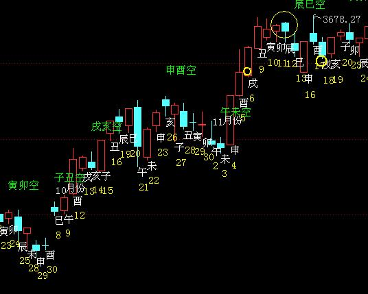
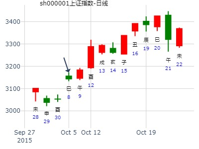
主帖标题: 第十五期预测上证指数比赛3日-7日
公历时间：2008年11月3日9时30分 星期一
干支：戊子年 壬戌月 丁未日 乙巳时 (旬空：寅卯)
震宫：雷水解
六神 伏 神 【本 卦】
青龙 ▅▅ ▅▅ 妻财庚戌土
玄武 ▅▅ ▅▅ 官鬼庚申金 应
白虎 ▅▅▅▅▅ 子孙庚午火
螣蛇 ▅▅ ▅▅ 子孙戊午火
勾陈 ▅▅▅▅▅ 妻财戊辰土 世
朱雀 父母庚子水 ▅▅ ▅▅ 兄弟戊寅木
这是大盘日K线的静卦! 仅供参考

主帖标题: 银行准备金上调短线利空靴子落地
公历起卦时间：2010年11月11日6时5分 (手工指定)
干支：庚寅年 丁亥月 乙丑日 己卯时 （日空：戌亥）
神煞：驿马－亥 桃花－午 日禄－卯 贵人－子，申
震宫：雷水解 震宫：雷水解
六神 伏神 本 卦 变 卦
玄武 妻财庚戌土 ▅▅ ▅▅ 妻财庚戌土 ▅▅ ▅▅
白虎 官鬼庚申金 ▅▅ ▅▅ 应 官鬼庚申金 ▅▅ ▅▅ 应
腾蛇 子孙庚午火 ▅▅▅▅▅ 子孙庚午火 ▅▅▅▅▅
勾陈 子孙戊午火 ▅▅ ▅▅ 子孙戊午火 ▅▅ ▅▅
朱雀 妻财戊辰土 ▅▅▅▅▅ 世 妻财戊辰土 ▅▅▅▅▅ 世
青龙 父母庚子水 兄弟戊寅木 ▅▅ ▅▅ 兄弟戊寅木 ▅▅ ▅▅
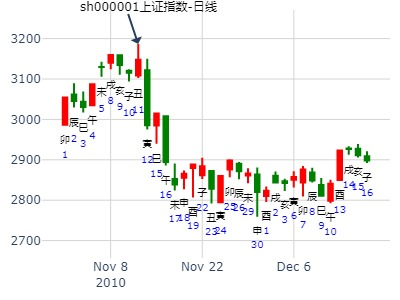
招财公主测300038下周走势.雷水解。
公历起卦时间：2011年11月11日10时23分 (在线摇卦)
干支：辛卯年 己亥月 庚午日 辛巳时 （日空：戌亥）
神煞：驿马－申 桃花－卯 日禄－申 贵人－丑，未
震宫：雷水解 震宫：雷水解
六神 伏神 本 卦 变 卦
腾蛇 妻财庚戌土 ▅▅ ▅▅
勾陈 官鬼庚申金 ▅▅ ▅▅ 应
朱雀 子孙庚午火 ▅▅▅▅▅
青龙 子孙戊午火 ▅▅ ▅▅
玄武 妻财戊辰土 ▅▅▅▅▅ 世
白虎 父母庚子水 兄弟戊寅木 ▅▅ ▅▅
亥日大跌。 子日小跌。
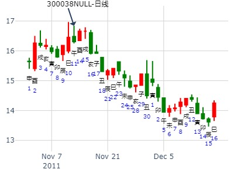
创业板11月11日-15日
时间: 2024-11-09
干支: 甲辰年乙亥月丁丑日 (旬空: 申酉 )
解静卦
青龙 ▅▅ ▅▅ 妻财戌土
玄武 ▅▅ ▅▅ 官鬼申金 应
白虎 ▅▅▅▅▅ 子孙午火
腾蛇 ▅▅ ▅▅ 子孙午火
勾陈 ▅▅▅▅▅ 妻财辰土 世
朱雀 ▅▅ ▅▅ 兄弟寅木
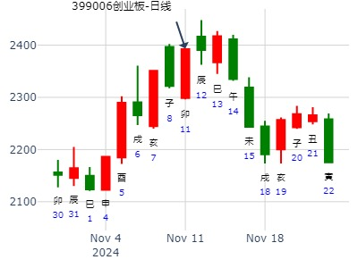
占事：002555顺荣股份今天涨跌
公历起卦时间：2013年12月4日7时52分 (电脑自动)
干支：癸巳年 癸亥月 甲辰日 戊辰时 （日空：寅卯）
神煞：驿马－寅 桃花－酉 日禄－寅 贵人－丑，未
震宫：雷水解 震宫：雷水解
六神 伏神 本 卦 变 卦
玄武 妻财庚戌土 ▅▅ ▅▅ 妻财庚戌土 ▅▅ ▅▅
白虎 官鬼庚申金 ▅▅ ▅▅ 应 官鬼庚申金 ▅▅ ▅▅ 应
腾蛇 子孙庚午火 ▅▅▅▅▅ 子孙庚午火 ▅▅▅▅▅
勾陈 子孙戊午火 ▅▅ ▅▅ 子孙戊午火 ▅▅ ▅▅
朱雀 妻财戊辰土 ▅▅▅▅▅ 世 妻财戊辰土 ▅▅▅▅▅ 世
青龙 父母庚子水 兄弟戊寅木 ▅▅ ▅▅ 兄弟戊寅木 ▅▅ ▅▅
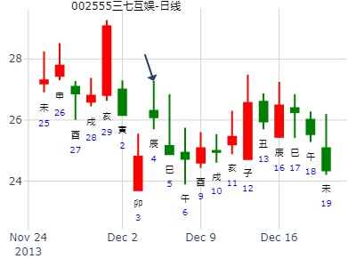